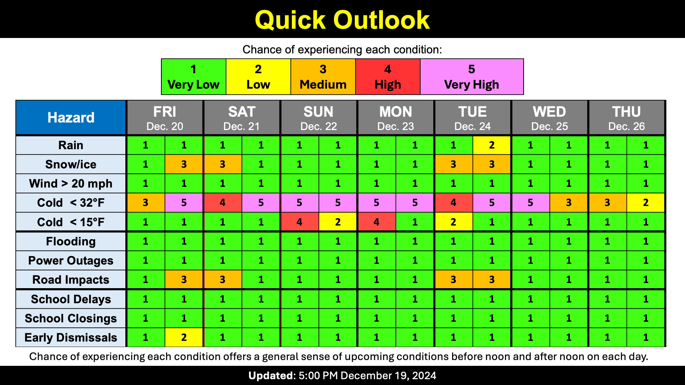

Light Snow Today
School Forecast
for Friday December 20th
Last updated: 6:00AM Friday December 20th, 2024
| 0% (Nope) |
|---|
| 0% (Nope) |
|---|
| 70% (High) |
|---|
___________________
6:00AM Friday:
Quick update this morning to note that confidence in snow developing later today has increased. No significant changes to the forecast, just minor tweeks.

The Forecast:
As of 6AM, temperatures in the Kingston area are around 26 degrees and snow is just beginning to fall in western New York. Here in Kingston, still expecting snow to fall between 1PM and 6PM today - snow could begin as early as 12PM. Still expecting up to about an inch of snow by 6PM. There may be a break in the snow after 6PM for a couple of hours. A final round of snow will likely occur between 12AM and 6AM Saturday. Total snowfall of an inch or two is likely by sunrise Saturday.
The Impacts:
Expect slick roads to develop by this evening. Temperatures are currently well below freezing and are likely to rise to only around 32 degrees this afternoon. This means that road surfaces will remain cold enough for snow to stick to them. School Impacts. With the increased confidence in the snow occuring and the potential for snow to develop as early as 12PM, the chances for early dismissals have increased since last night. An early dismissal is not definite, but is more likely than not in Kingston.
After this, the next chance for snow will be on Tuesday. It's looking like another light morning snow - I'll post an update on Sunday.
-Ethan
___________________
6:00PM Thursday:
A weak storm will move through the region Friday into Saturday bringing periods of light snow. Slick roads are possible Friday evening through Saturday morning.
The Forecast:
There will be two chances for snow between now and Saturday. The first chance of snow will be Friday afternoon. Light snow is possible between 1PM and 6PM Friday. There is the potential for 0 to 1 inch of snow during this time. The second chance for snow will be Saturday morning. Light snow will again be possible between about 3AM Saturday and 9AM Saturday. Additional snow accumulation of less than 1 inch is possible Saturday morning. Temperatures should fall to the upper 20's tonight and Friday night and rise to the low 30s during the day on Friday.
The Impacts:
Slippery roads are possible Friday evening and Saturday morning. While the snow will be light, temperatures should be cold enough to allow snow to stick to most roads. The main uncertainty with the impacts is how persistent the snowfall actually is. If it is on the lighter end, it could end up being just a dusting which would likely not impact roads. If it is on the higher end, it could end up being an inch or so which would certainly make roads slippery. School Impacts. Because of the timing, early dismissals are possible in Ulster County. Early dismissals are most likely to occur in districts out toward the Catskills, such as Margaretville, Livingston Manor, and Tri-Valley. In districts that do not have early dismissals, after school activities may be cancelled.
After this storm, our next chance for snow will be on Tuesday.
Next Update:
By 9AM Friday
-Ethan

KingstonSnows | Kingston, New York
Website built by Ethan Burwell